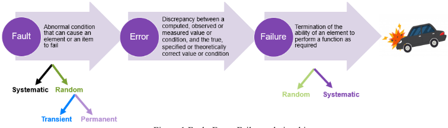
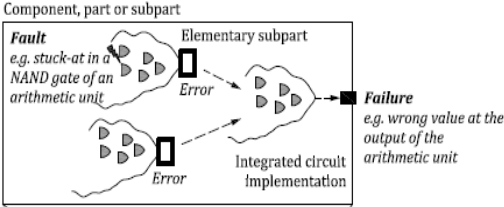
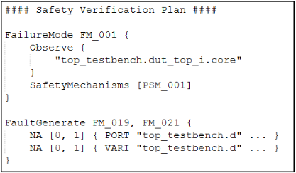
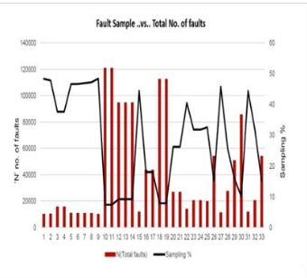
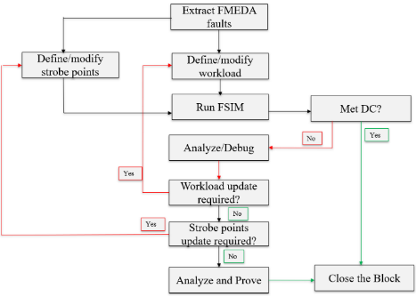
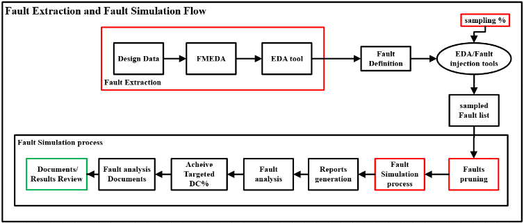
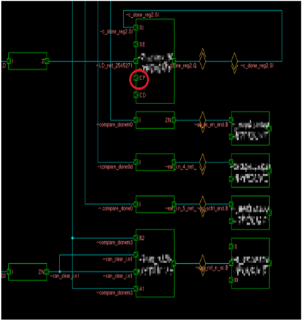
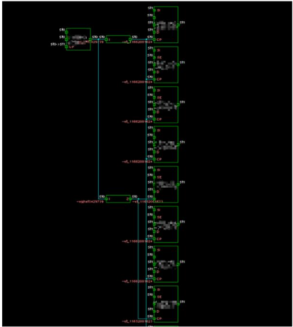
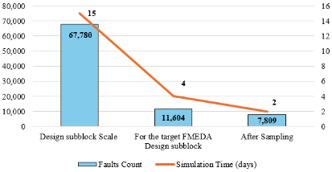
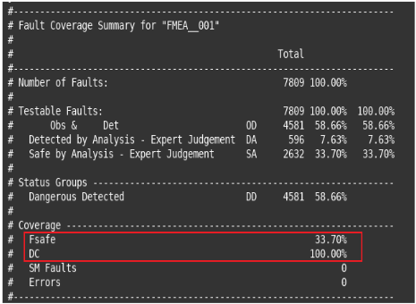

闭环安全验证：FMEDA 驱动的故障仿真与先进调试实现高效故障分类
论文针对汽车 SoC 功能安全验证中 FMEDA 分析与故障仿真长期脱节的问题——故障列表通用且未过滤、重复工作、追溯缺失、安全意图与验证结果错位——提出 FMEDA 驱动的闭环故障仿真方法学。方法在 ISO 26262 part 11 定义的 elementary subpart 粒度解析 FMEDA 数据，用 Synopsys VC FSM 自动生成安全验证计划，将失效模式映射到 RTL/门级可仿真故障模型，并按安全相关性排定仿真优先级；结合 Software Test Libraries (STL) 激励、strobe 观测点选择与迭代 FSIM 流程收敛目标 DC，对仍未分类的故障引入 AI 辅助的结构分析、行为模式识别与根因预测（该阶段标注为进行中）。在生产汽车 SoC 模块（含多个安全机制）上验证：故障集合缩减超过 33%，人工调试工作量降低近 66%，计算资源消耗降低 3-5 倍，同时达到与传统穷举方法相同或更好的 SPFM/LFM 覆盖，并实现仿真结果与 FMEDA 条目的一对一追溯。
ISO 26262、IEC 61508 等功能安全标准要求证明安全机制（parity/ECC、watchdog、lockstep、reset monitor 等）能可靠检测或控制相关硬件故障，并以 SPFM/LFM 等 DC 指标量化。但传统工业流程中 FMEDA 与故障仿真相互独立执行：故障列表通用且未过滤、FMEDA 假设与仿真 campaign 不一致、缺乏追溯，导致重复工作、多轮迭代和安全意图与验证结果之间的错位，难以高效达成 ASIL-D 的覆盖目标。
建立 FMEDA 输出到故障仿真执行的数据驱动直连闭环：(1) 在 elementary subpart（ISO 26262 part 11 定义）粒度解析 FMEDA，提取失效模式、受影响模块、DC 目标与安全目标；(2) 用 Synopsys VC FSM 自动生成安全验证计划，将每个 FMEDA 失效模式映射到 RTL/门级可仿真故障模型与区域；(3) 门级注入按安全相关性优先级排序的故障，用 STL 模拟在环诊断行为，基于 FMEDA 安全机制设置 strobe 观测点捕获故障效应；(4) 迭代 FSIM 流程：分析未检测故障（阻塞的传播路径、缺失 strobe、激励不足），迭代 refinement workload 与观测逻辑直至达到目标 DC；(5) 对仍未分类/模糊的故障用 AI/ML 做结构分析、故障行为模式识别与根因预测以辅助分类（进行中）；(6) 每个 FSIM 检测结果映射回对应 FMEDA 条目，形成一对一可追溯、可审计的闭环。
相比传统穷举故障注入方法，故障集合（fault population）缩减超过 33%
人工调试（manual debug）工作量降低近 66%
计算资源利用率（compute resource utilization）降低 3-5 倍
在生产汽车 SoC 模块（配备多个安全机制、数千个安全相关故障规模）上验证，达到与传统方法相同或更好的 SPFM/LFM 诊断覆盖（论文正文未给出具体数值）
每个 FSIM 检测结果与 FMEDA 条目一一映射，实现可追溯与审计就绪（qualitative 结论）
相对已有工作中 FMEDA 与故障仿真独立执行、故障列表通用未过滤的模式，本文提出端到端数据驱动的直接联动：以 elementary subpart 粒度的 FMEDA 数据自动生成针对性、优先级化的故障仿真计划，避免非安全关键信号的无效仿真，并将仿真结果一一映射回 FMEDA 条目形成闭环追溯；同时引入 AI/ML 辅助大规模故障仿真中未分类故障的调试与分类（该部分尚在进行中）。
相关度级别：high
命中能力域：2.4 设计验证方法学 | 2.7 EDA/验证自动化与 AI 辅助
理由：论文核心是验证方法学（故障仿真 campaign 规划与优先级排序、覆盖率驱动的迭代收敛、未检测/未分类故障的 debug 与 triage 方法学），直接对应 2.4 中覆盖率驱动验证、回归 campaign 与 debug 方法学；其验证计划自动生成、结果自动追踪与 AI 辅助故障分类对应 2.7 的验证流程自动化与 AI 辅助验证/bug 分析。论文列举的安全机制包含 parity/ECC，与团队存储 IP（LPDDR/HBM 系列）内置的 ECC/parity 机制直接相关；若团队 IP 面向汽车市场（车规 LPDDR5X、ADAS SoC 中的 UCIe 互连），需向客户交付 FMEDA 与故障仿真安全证据，该流程具备直接复用价值。
建议动作：深入精读并做内部分享
Sagar Hema Vidya，硅设计工程高级经理 - AMD 海得拉巴（hema.vidya.sagar@amd.com）
Vedant Garg，解决方案架构师 - Synopsys 奥斯汀（vedantg@synopsys.com）Sudhakar Chappidi，SMTS 硅设计工程师 - AMD 海得拉巴（Sudhakar.Chappidi@amd.com）Sharon Monica Kurmana，高级硅设计工程师 - AMD 海得拉巴（sharon.monica.kurmana@amd.com）
向自主出行的快速迈进正在重塑汽车行业格局，并加速半导体技术的演进。随着制造商追求更高的集成密度和更低的工作电压，现代半导体越来越容易受到随机硬件失效的影响，这类失效可能在器件生命周期内不可预测地发生。高级驾驶辅助系统（ADAS）和自动驾驶车辆（AV）功能依赖这些数字与模拟系统来执行关键的实时应用，这对其验证与安全性提出了根本性的问题。
ISO 26262 和 IEC 61508 等功能安全标准要求对硬件安全机制进行全面分析，这种分析通常通过故障模式、影响与诊断分析（FMEDA）来开展。然而，传统的验证与故障仿真流程往往独立于 FMEDA 活动运行，从而造成脱节。未经 FMEDA 识别的故障可能无法直接映射到仿真活动中，而缺乏这种安全上下文会导致多轮迭代、缺乏跟踪，并给实现稳健的安全验证收敛带来挑战。
本文提出一种方法学，将 FMEDA 输出与故障仿真执行直接衔接起来，实现一种验证驱动的方法，使仿真活动能够根据 FMEDA 结果进行精确定制。通过利用 FMEDA 数据，该方法精确定义了必须仿真哪些故障、指定相关的检测机制，并建立与安全相关的覆盖率指标。
本工作的另一项贡献是一种先进的调试方法学，用于解决故障分类中的歧义问题——这在大规模故障仿真活动中正日益成为一项关键需求。本文详细阐述：
本工作将使验证工程师、功能安全经理和电子设计自动化（EDA）工具开发者受益，既提供方法学上的进步，也提供可应用于汽车、航空航天和工业领域安全关键设计的实用见解。
诸如 ISO 26262 等功能安全标准要求硬件设计证明其安全机制能够可靠地检测或控制可能导致危险行为的故障。随着片上系统（SoC）复杂度的不断提升，要在无需过多人工投入或仿真成本的前提下证明安全覆盖率目标已经达成，变得极具挑战性[1][5]。
在实践中，安全验证依赖于两项活动：
FMEDA 定义了需要保护的对象及其安全机制，而故障仿真则度量安全机制所实现的诊断覆盖率（DC）。尽管这两项活动针对的是相同的安全目标，但它们往往被独立执行，从而导致重复工作、假设不一致以及可追溯性上的缺口。这促使我们需要一种将 FMEDA 意图直接与仿真证据相关联的统一方法[4]。
当元器件不再执行其预期功能时，就会发生失效。它们分类如下：
这两类故障需要不同的缓解策略，但只有随机硬件故障才计入 ISO 26262 的诊断覆盖率。因此，我们的重点是在门级对随机硬件故障进行建模和验证。

ISO 26262 要求设计人员证明所实现的安全机制（如奇偶校验/纠错码（ECC）、看门狗、锁步或复位监控器）能够检测或控制相关硬件故障。该标准使用单点故障度量（SPFM）和潜在故障度量（LFM）指标对此进行量化，这些指标取决于有多少故障是：
要达到 ASIL-D，需要提供证据表明未检测到的单点故障保持在极小的阈值以下。这推动了对与 FMEDA 相关联的精确且可追溯的故障分析的需求。
FMEDA 用于识别哪些单元需要安全机制，以及能够达到何种诊断覆盖率（DC）。故障仿真则通过注入故障并检查安全机制是否正确响应，来提供实验证据。
然而，在当前的工业流程中，这两项活动是相互脱节的：
这些差距会导致效率低下，并带来安全意图与验证结果之间出现错位的风险。一种能够将 FMEDA 条目自动关联至针对性故障仿真的方法可以避免这些问题。
本文提出的方法在 FMEDA 输出与故障仿真环境之间建立了直接的、数据驱动的关联，有效闭合了验证回路，确保故障分析具有可追溯性、高效性并聚焦于安全。与传统流程中 FMEDA 和故障仿真各自独立运行不同，这种集成方法将仿真活动直接与安全相关的设计元素对齐，从而减少冗余并提高覆盖率置信度。
流程的第一步是在基本子部件（elementary subpart）层级解析 FMEDA 数据，提取诸如失效模式、受影响模块、诊断覆盖率（DC）目标以及相关安全目标等信息。这种结构化提取确保仿真期间注入的每一个故障都有明确的依据，并可追溯至原始 FMEDA，从而强化合规文档与审计就绪性。通过在基本子部件层级开展工作，该流程还允许对安全验证进行细粒度控制，避免对非安全关键信号进行不必要的仿真 [5][6]。基本子部件的定义如 ISO 26262 第 11 部分所定义，如图 2 所示。一种起源于扇入至基本子部件（时序元件）的门电路的固定型故障（stuck at fault），最终该错误具有导致失效的潜在可能。

一旦提取出 FMEDA 目标，便会生成故障仿真计划。该故障仿真验证计划通过使用 Synopsys 的 FMEDA 工具（VC FSM）实现自动化完成。该计划将每个由 FMEDA 定义的失效模式映射到 RTL 或门级表示中的一个或多个可仿真故障模型及其所在区域。主要特性包括：

这一步骤对于在保持与安全目标完全一致的前提下减少验证工作量至关重要，相较于传统方法中故障列表通用且未经筛选的做法，这是一项重大改进。
精确理解与安全相关的故障及其到设计中的映射，对于高效的故障仿真活动至关重要。如果故障集合定义不清晰，仿真运行可能变得不完整或规模不必要地庞大。为避免这种情况，执行流程首先提取细粒度的 FMEDA 数据，并生成有针对性且经过优先级排序的故障仿真计划。这确保了仿真资源得到高效利用、诊断响应得到正确解读，并且所得的覆盖率指标准确反映 ISO 26262 安全目标。[2]
故障仿真阶段利用多种优化与自动化技术来最大化效率和诊断覆盖率（DC）。所选故障在门级注入，并基于安全机制对诊断响应进行监测。仿真活动按安全相关性确定优先级，确保 ASIL 关键元素首先得到验证。
为改进故障仿真执行，应用了多种先进技术：

图 5 展示了从故障提取开始的整个流程，以及该流程如何将基本子部件 FMEDA 与故障仿真流程集成在一起。图 6 展示了用于实现 FMEDA 中所定义目标 DC 的迭代式故障仿真（FSIM）流程。该流程始于故障提取，如第 3 节所述，其中基于 FMEDA 数据识别安全相关故障。
在故障提取之后，需要定义适当的测试激励，以激活与每个 FMEDA 分区相关联的安全机制。软件测试库（Software Test Libraries, STLs）用于模拟真实的现场诊断行为并触发故障响应。
基于 FMEDA 安全机制，在 FSIM 环境中添加了关键观测点（strobes，选通点）。选通点确保故障效应被正确捕获，并与预期的诊断响应相关联。[2][5]
使用选定的软件测试库（STL）执行故障仿真，以验证 FMEDA 范围内的诊断覆盖率（DC）。仿真后，对任何未检测到的故障进行分析，以识别潜在问题，例如传播路径被阻断、选通点缺失或测试激励不足。利用这些反馈，对工作负载和观测逻辑进行迭代改进，以提高 DC 并消除验证缺口。[2]
对于仍未被分类或存在歧义的故障，采用人工智能（AI）进行更深入的结构分析，识别故障行为模式，并预测根本原因。机器学习模型通过将故障动态分类为明确的类别，并建议有针对性的故障注入以提高覆盖率，从而帮助解决检测中的不确定性；该阶段正在进行中。
一旦满足 DC 目标，便对结果进行分析、正式证明，并关闭该模块。
故障仿真完成后，仍有一些未解决的故障需要借助调试技术进行分析。本节总结了如何针对可观测性、可控性和诊断可见性对每个故障进行评估，以确定其安全相关性。如表 1 所述，该分析通过在结构级和功能级审查信号传播与屏蔽情况，识别出哪些故障是安全的、哪些故障可能影响安全目标。总体而言，该流程确保只有影响安全的故障才会被标记出来，以进行进一步的诊断处理。
| Reference | Type | Block/Example | Safety Reason | Diagnostic Logic |
|---|---|---|---|---|
| Figure 7 | Safe | Scan FF (fault on CP / D / Q, SE=0). | Fault cannot reach functional logic | Scan disabled, path masked |
| Figure 8 | Safe | Clock Gate (EN S@0). | No impact on functional data/control | Clock toggles but logic unaffected |
| Figure 8 | Detect by Analysis | RAM ECC (other banks) | Behavior same across all the banks | ECC guaranteed detect/correct |
| Reference | Type | Block/Example | Safety Reason | Diagnostic Logic |




FMEDA 驱动的故障仿真方法学为汽车 SoC 的安全验证引入了一种结构化且符合 ISO 26262 规范的途径。FSIM 的每个检测结果都会映射到其对应的 FMEDA 条目，从而在仿真故障行为与其关联的安全目标或诊断机制之间建立一一对应的关联。该过程建立了一个闭环系统，确保了可追溯性、准确性和审计就绪性。这种对齐关系消除了冗余的故障仿真活动，并提升了 SPFM 和潜在故障度量（LFM）等关键安全指标。[3]
| Stage | Flop count | Faults Count | Simulation Time (days) |
|---|---|---|---|
| Design subblock Scale | 26939 | 67,780 | 15 |
| For the target FMEDA Design subblock | 3562 | 11,604 | 4 |
| After Sampling | 3562 | 7,809 | 2 |
| Stage | Flop count | Faults Count | Simulation Time (days) |
该流程还支持跨迭代的自动化进度跟踪，使工程师能够清晰地识别覆盖率缺口、残余故障趋势以及需要细化工作量的领域。最终，这种方法确保每一个仿真故障都能切实服务于某个安全目标，将故障仿真从一种统计性练习转变为一种结构化、符合标准的验证方法学，并以可量化的证据支持 ISO 26262 安全论证的开发。

与传统的穷举式故障注入方法相比，所提出的流程带来了可衡量的效率提升：故障群体规模缩减超过 33%，人工调试工作量减少近 66%，计算资源利用率降低 3 - 5 倍。这些改进在一款配备多种安全机制的量产汽车 SoC 模块上得到了验证，展示了面向拥有数千个安全相关故障的下一代设计的可扩展性与工业适用性。[2]
| Metric | Traditiona l Flow | Proposed- Flow | Improvem ent |
|---|---|---|---|
| Faults Simulated | 11,604 | 7,809 | ↓ 33% |
| Traceable Faults | 65% | 92% | ↑ 42% |
| Unresolved Faults | ~4000 | ~600 | ↓ 85% |
| Manual Debug Time | 6 weeks | 2 weeks | ↓ 66% |
| Audit readiness | Partial | Full | ✓ |
| Metric | Traditiona l Flow | Proposed- Flow | Improvem ent |

总体而言，这种数据驱动的方法学不仅取得了与传统方法相同甚至更好的诊断覆盖率（SPFM/LFM），而且其可扩展性和审计就绪性也远胜一筹。该流程有效地将故障仿真从一种资源密集型练习转变为一种可重复、可追溯且符合标准的验证方法学，在准确性和效率两方面为 ASIL 覆盖率带来了可量化的收益，从而闭合了安全验证回路。
| Acronym | Full Form / Description |
|---|---|
| ASIL | Automotive Safety Integrity Level |
| DC | Diagnostic Coverage |
| ESE | Elementary Subpart Extraction |
| FMEDA | Failure Modes, Effects and Diagnostic Analysis |
| Fsafe | Safe Fault (Faults with no safety impact) |
| LFM | Latent Fault Metric |
| S@1 / S@0 | Stuck-at-1 / Stuck-at-0 Fault Model |
| SM | Safety Mechanism |
| SPFM | Single Point Fault Metric |
| STL | Software Test Library |
| Acronym | Full Form / Description |
1 条证据未在原文中核对到